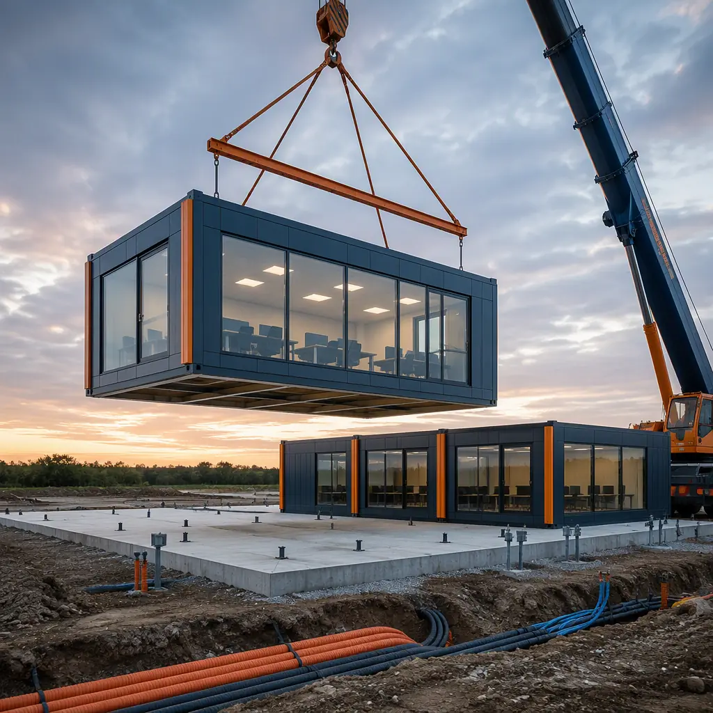
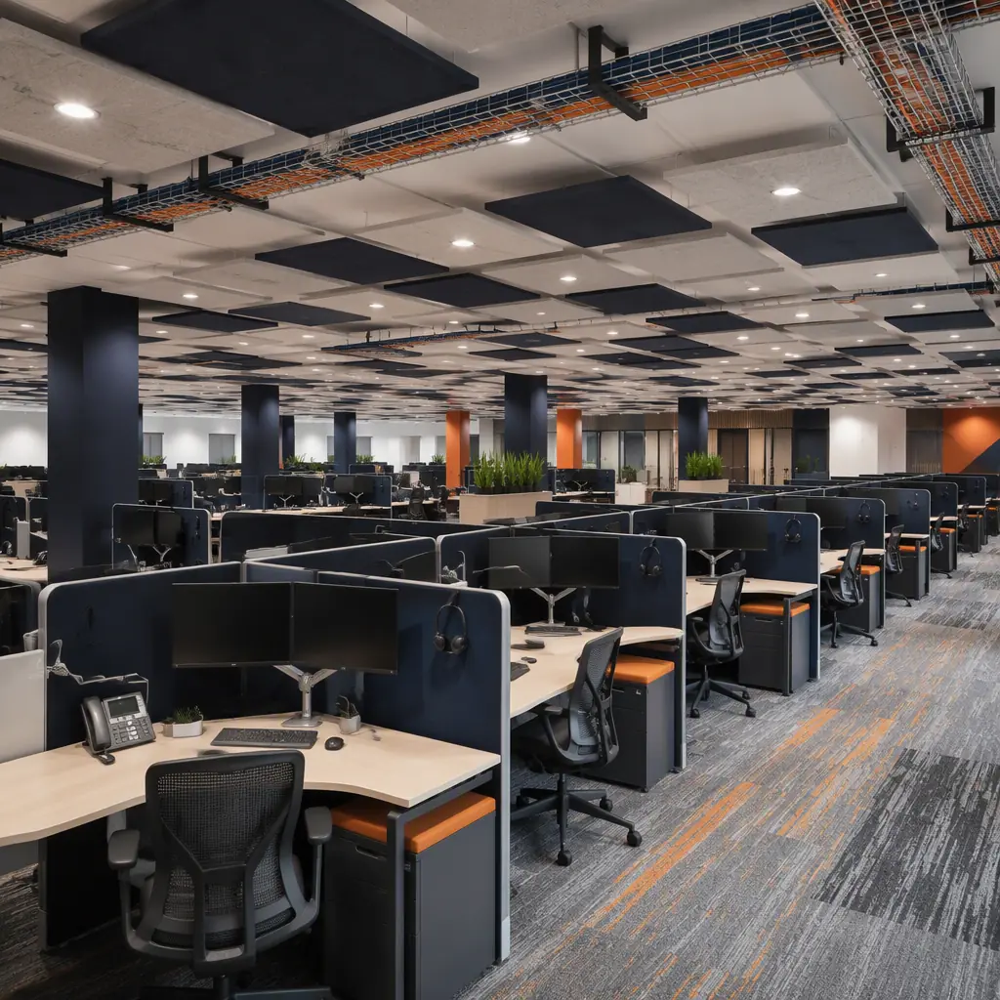

A contact center is an office building with a twist: instead of a few dozen desks and a conference room, it packs 100–1,000+ seats of continuous-operation workers into an open floor that has to stay acoustically manageable, thermally stable, and powered around the clock — with network infrastructure that cannot drop a single call. The global contact center market operates an estimated 100,000+ facilities, and the industry's churn is relentless: BPO contracts come and go, headcounts scale up and down with client wins, and operators constantly open, expand, and relocate centers to chase labor pools and cost advantages. Yet most contact centers are still delivered as site-built offices with 12–18 month schedules, because the open-floor layout, acoustic treatment, and redundant MEP systems are layered on by separate trades in a long sequential chain. Modular construction collapses that to a 12–16 week factory production cycle with a 2–3 week site set, because the acoustic package, power distribution, and structured cabling are engineered into the modules and installed in the factory where they can be tested — not improvised in the field. This guide explains the contact center building program, how factory-built delivery satisfies acoustic, power, and network requirements, and what operators and developers should know before they build.

Why Contact Center Operators Are Going Modular
Three factors make modular delivery a strong fit for contact centers. First, the building is defined by its infrastructure, not its architecture: once the seat count, shift pattern, and network requirements are set, the acoustic, power, and cabling packages are nearly identical from project to project, and repetition is what factory production does best. Second, the schedule is commercially critical — a contact center's revenue depends on answering calls, and every month of construction delay is a month of service-level agreement (SLA) penalties and lost client confidence. Third, the inspection and commissioning risk is concentrated: centers fail on acoustics, power redundancy, and network certification far more often than on any other system, and all three are dramatically more reliable when factory-installed and pre-tested than when coordinated by multiple site trades. The quality-gate discipline that makes factory testing reliable — documented inspections at every stage of production — is the same system MODURA applies across all building types, covered in our factory quality control guide.
Operators also face a labor-market reality that punishes schedule uncertainty: a center must open when the labor pool is available and the client contract is active, and a delayed building can miss both. A committed factory schedule keeps those windows alive. The structural foundation for these buildings — steel frames with wide column spacing for open floors — is the same logic MODURA applies to commercial buildings, detailed in our modular office buildings guide.
The Contact Center Building Program: Seats, Zones, and Infrastructure
A contact center is a deep open floor with tightly specified support systems. The standard program for a mid-size facility breaks down as follows:
- Seats (the core product). Contact center floors typically deliver 100–150 sq ft per seat including circulation, with workstations at 6×6 ft to 6×8 ft footprints. A 200-seat center needs roughly 20,000–30,000 sq ft of floor, plus support spaces.
- Acoustic management (the non-negotiable). Open floors with 100+ simultaneous conversations need ceiling and wall absorption (NRC 0.85–1.0), sound-masking systems tuned to 45–50 dB, and acoustic zoning between operations, training, and break areas — the difference between a workable floor and a noise storm.
- Power and redundancy (15–25% of project cost). Contact centers run 12–24 hours a day and cannot drop calls: UPS-backed power, generator transfer, and a power density of 15–25 VA per sq ft with 2N or N+1 redundancy for critical circuits.
- Network and structured cabling. Category 6A or fiber backbone, dual-feed telecom entry, and a raised floor or overhead tray system sized for 2–3 drops per seat — with headroom for seat-count growth.
- Support spaces. Training rooms, break rooms, huddle rooms, management offices, and a secure network room — arranged so operations never interrupt training and vice versa.
Every element maps onto factory production. Acoustic panels are installed and verified in the factory, power distribution and cabling trays are pre-fitted and labeled before shipment, and the network room is factory-commissioned rather than field-assembled. For the MEP engineering that carries these systems — power, data, HVAC, and their integration — our modular MEP systems integration guide covers the technical foundation.

Acoustics: Making 500 Conversations Work on One Floor
Acoustics are the defining environmental challenge of the contact center. With 200–500 agents on headsets, each speaking at 60–70 dB, the ambient noise floor without treatment would exceed 75 dB — enough to force agents to shout, degrade call quality, and drive turnover. The acoustic package has three layers: absorption on ceilings and walls (NRC 0.85–1.0 panels covering 60–80% of the ceiling), a sound-masking system that emits shaped pink noise at 45–50 dB to cover speech intelligibility, and zoning that separates high-energy operations from training and break areas. The design target is a speech privacy index that keeps intelligible conversation from crossing workstation clusters — measured by the Articulation Index or Speech Transmission Index during commissioning.
Factory-built centers engineer this in rather than commissioning it in the field. The absorption panels, masking speakers, and acoustic zoning partitions are installed in the factory and verified with sound measurements before shipment, so the owner receives a floor that has already proven it meets the speech-privacy target — not a space waiting for an acoustic contractor to fix in the field. The acoustic engineering principles — absorption, masking, and zoning — are the same ones MODURA applies to sound-sensitive buildings of all kinds, documented in our modular acoustics and soundproofing guide.
Power and Network: Never Dropping a Call
A contact center is a mission-critical facility: a power blip that drops the phone system for ten minutes can cost an operator an entire day's service-level performance. The power design starts with a dual-feed utility service where available, backed by a UPS system sized for 15–30 minutes of ride-through and a generator capable of carrying the full critical load indefinitely. For a 200-seat center at 20 VA per sq ft over 25,000 sq ft, that means roughly 500 kVA of UPS and generator capacity, with automatic transfer switches and a maintenance bypass so the system can be serviced without dropping power. The network side is equally demanding: Category 6A cabling to every seat (10 GbE-ready), a fiber backbone to the network room, and dual telecom entry points so a single fiber cut cannot take the center offline.
Factory-built centers engineer this in rather than commissioning it in the field. The UPS, switchgear, generator interface, and cabling trays are installed in the factory modules and load-tested before shipment; the network room is pre-fitted and pre-cabled so on-site cutover is a matter of connecting factory-tested assemblies rather than building infrastructure from scratch. The same factory-installed approach applies to the electrical and low-voltage systems in any high-performance building, which we cover in our modular MEP systems integration guide. For operators that also need resilient IT capacity, the power and cooling design logic overlaps with our modular data center construction guide.
Factory Production: Acoustic Packages, Pre-Tested MEP, and the 14-Week Schedule
The center is built indoors because acoustic and infrastructure quality are controlled indoors. Acoustic panels are installed with verified coverage, cabling is terminated and labeled at dedicated stations, and the power system is load-tested before the module ships. Every connection is documented in the submittal package — the same production-line discipline of weld verification, dimensional checks, and MEP testing at defined gates that MODURA documents in our factory quality control guide. Weather independence matters for contact center projects too: a center opening in a winter market does not lose its schedule to frozen site work, because the building work happens in a climate-controlled factory and the site work is limited to foundation, utilities, and a short set window.
On site, the set is measured in weeks, not seasons: foundations and utility runs are prepared in parallel with factory production, and the modules are set, joined, and interconnected over a 2–3 week window, followed by final network certification, acoustic verification, and the operator's readiness testing. The full schedule comparison of factory-built versus conventional delivery is in our modular construction timeline analysis.
Cost and Timeline Benchmarks for Contact Centers
Contact center economics are driven by infrastructure cost: the acoustic package, power redundancy, and structured cabling together account for 25–40% of total project cost, which is why the infrastructure-first approach of modular delivery has such a large impact. For a typical 200-seat center (roughly 25,000–30,000 sq ft including support spaces), modular delivery lands at $160–240 per sq ft complete — or $4–7 million fully built — compared with $210–300 per sq ft for equivalent site-built construction. The 20–30% saving comes from factory labor efficiency, compressed schedule, and the elimination of specialty-contractor coordination risk.
| Benchmark | Site-Built Center | Modular Center |
|---|---|---|
| Design through first call | 12–18 months | 6–9 months |
| Building cost (200-seat center) | $210–300 / sq ft | $160–240 / sq ft |
| Acoustic package | Field-installed, verified on site | Factory-installed, pre-measured |
| Power / network infrastructure | Field-assembled, commissioned on site | Factory-installed, pre-load-tested |
| On-site set window | N/A (sequential trades) | 2–3 weeks |
| Relocatability | None | Full — re-deployable to a new labor market |
For BPO operators, the calculus adds flexibility: a modular center can be delivered, expanded seat-by-seat as contracts grow, or relocated to chase labor pools when a client contract ends — converting what was a stranded asset into a movable one. Operators should structure procurement around performance — committed opening date, verified acoustic targets, documented power and network testing — using the framework in our modular RFP and procurement guide. Total lifecycle economics, including the power and network infrastructure that dominate operating cost, are covered in our total cost planning guide, and per-square-foot benchmarks across building types are in our modular construction cost guide.
A contact center fails on infrastructure, not walls: the acoustic package, the power redundancy, and the network certification. Factory production is the only delivery method where those three systems are built, tested, and documented as one integrated building — before it ever reaches the site.
Compliance, Zoning, and the Business Case
Contact centers carry a moderate compliance load: zoning (call centers are typically permitted uses in commercial districts, but large facilities may require site plan review), building code requirements for the occupancy type, and energy code compliance for the 24/7 operations profile. Many operators also require certifications for client contracts — including data privacy and security standards for centers handling financial or healthcare data — which translate into physical security and access-control requirements for the building. A factory-built center helps at every step because the engineering documentation — acoustic ratings, power redundancy diagrams, network certification — exists as a complete submittal package from day one, rather than being assembled after construction. The approval sequence for factory-built structures is covered in our permitting and zoning guide, and fire-resistance requirements for the occupancy are covered in our modular fire safety guide.
On the business side, contact centers are a durable commercial model: BPO contracts, omnichannel operations, and back-office functions compound, and operators increasingly treat centers as portfolio assets that must be quickly deployable, scalable, and relocatable. Enterprises planning office and operations space will find the same factory-built delivery that serves modular office buildings and flexible coworking and office spaces, with the acoustic and infrastructure systems specified to contact center standards. Whichever path applies, the key is to specify the infrastructure first — seat count, shift pattern, redundancy level, network certification — and let the factory build the building around them.